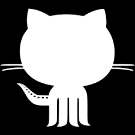

GIT
Concepts
What to do in a Repository?
How to make a Git Repository?
To create a new repository on Github, first you need to login to Github website and go to Github homepage, you should see a '+ New Repository' button, Click that button. After that, GitHub will ask you to name your repository and provide a brief description (which is optional). When done filling the information, click 'Create Repository' button.

How to create a Clone?
To create a clone, on the right side of github on homepage click 'clone or download' button. Then copy the link. After that go to WebStorm, inside WebStorm click VCS menu on the top side and inside that menu go to Git, inside Git click on clone. After that paste the URL on the url section and then clone it.
How to Fork?
A fork is a copy of a repository. This allows you to freely make any changes without affecting the original project. To fork a repository, just click on the fork button at the top right corner in Github home page. When the fork completes you will have access to the files on that repository.

Gitignore
Gitignore file is a text file that tells Git which folders and files to ignore. This file is usually placed in the main directory of the project but it could be in any directory.
How to make a commit in WebStorm?
Commit
To make a commit in WebStorm, go to VCS menu at top corner and then click commit. After that select the files that you want to commit to Github, then write a commit message to let you or others know what that commit was about. Then click commit button. The commit feature is used for saving your work to your local repository.
Branches and Checkout in WebStorm
Branch
A Branch is a copy of your original code in which you can make any changes without affecting any of the main code. Branches are made using the 'Branch' button on top corner inside Git menu which is inside VCS menu as shown above. After going inside Git menu select 'Branches'. Selecting it will take you to a pop window in which you can name the branch.
Checkout
To Checkout to a new branch go to bottom right corner and click 'Git:master'. Inside this menu you will see your different branches, after clicking on a branch you will see a checkout option, Click that to change your branch.
Merging Branches
To Merge a branch go to the bottom right corner and click 'Git:master' as shown above. Inside it, click on the branch you want to merge to. There will be an option 'Merge into current', click it. It will then give you a popup message saying it merged.